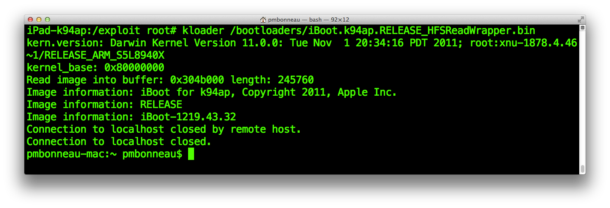

The new iBoot
Here you have reached the final part of this writeup about exploiting the bug itself, writing a new bootloader image into running memory and let the current iBoot jumps to it from our shellcode.
Previously, we replaced the IRQ vector pointer of the current running iBoot by a pointer to our payload base address in memory. Once the heap buffer overflow is triggered, iBoot gets busy while its HFS+ driver is writing megabytes of filesystem data into memory until any interrupt request occures. At this moment, the CPU directly jumps to our payload instead of IRQ routines. We set this shellcode to hook on the prepare_and_jump routine of the current running iBoot, allowing us to run a completely new bootloader image. Depending of how this heap buffer overflow is exploited and how we want to reset our iBoot environment, we could have hooked on different functions than prepare_and_jump in order to acheive a similar result. For example, we could have set our payload to re-run the current running iBoot like @xerub did for De Rebus Antiquis instead of writing a completely new image into memory then jump to it. I believe that a re-run could works for our case because we have previously overwritten the whole current running iBoot by a complete image of itself (except with a patched IRQ pointer). However, additional patches such as signature checks and nvram boot-partition would have to be applied there instead of on the new iBoot image like we are going to do.
Currently, the only missing part in our exploitation of this bug is to place a new bootloader image exactly at address 0xA0000000 in running memory to make our shellcode jumps to. Remember that in this payload, 0xA0000000 is the image load address we passed as parameter to the hooked prepare_and_jump function.
The prepare_and_jump function can theorically run any ARM bootloader image that are designed for the CPU they are intended to run on. In fact, this function is the last one called when you use the go command from the recovery console. So, any image you can run with that command could be a good candidate to be used with our payload. There's some important considerations though, the go command does much more preparation such as image validation and unpacking data from the img3 container. Calling only the prepare_and_jump function allows us to skip those, meaning as well that we have to remove the IMG3 container of the new bootloader image used with our payload.
Choose any ARM image compiled for our device CPU, I recommand Apple secondary stage bootloader ones such as iBEC and iBoot but any other custom images should be good as well. If you use Apple's proprietary ones, you have to decrypt first (if images are encrypted) then extract the data portion of the IMG3 container.
We will do simple for this writeup by choosing exactly the same iBoot version as the signed one flashed on my device, iBoot-1219.62.15~2 to be more precise. This will allow us to untethered boot iOS 5.0.1, which is the only OS currently installed on our device.
We already have decrypted the stock iOS 5.0.1 iBoot image as iBoot.k94ap.RELEASE_dec.bin which should be located in your iOS 5.0.1 work folder. Be sure that the IMG3 header is removed, this has been done previously using xpwntools with the flag -decrypt omitted.

Now, apply any patches you want to the decrypted image. We will use iboot32patcher to disable signature checks (image validation) and set custom boot-args such as verbose boot (-v).
pmbonneau-mac#iboot32patcher iBoot.k94ap.RELEASE_dec.bin iBoot.k94ap.RELEASE_patched.bin -b "-v"
With the current patches we did, you won't be able to run custom payloads such as memrw or aes sent to the patched iBoot via USB using the "go" command. If you do, iBoot will panic because that command expects an img3 container for which a bootloader image will be unpacked then copied to load address before being executed. If you want to run custom payloads, redirecting one iBoot command handler directly to loadaddr (0x80000000) is an easy way to do this. In other words, we modify a function pointer to 0x80000000 which is the memory address where our payload code will be placed by iBoot USB routines. We already applied this patch when we patched iBoot to run the memrw payload in order to dump the TLB data live from running memory. However, the way we did it for that case isn't optimized. We previously patched the "go" command handler, which is enough when the purpose of our patched iBoot is only to run custom payloads then reboot but isn't when we want to be able jumping to a new bootloader image. Actually, we bypass the default "go" command routines when we redirect its command handler pointer. So, we lose the original jump to image functionality of iBoot. If we want to save both, send custom payloads and jump to image, we can redirect an "useless" command handler such as the ticket one to 0x80000000. We patched image validation, so there are no reasons a ticket would have to be loaded there. This can be all done using iBoot32patcher, just add -c ticket 0x80000000 in the previous command in order to redirect the ticket command handler to load address (0x80000000).
Your payloads will have to be called like this from the iBoot console.
ticket mread 0x9FFF8000 0x4000
You can also set code-signing enforcement and amfi boot-args, if you want to jailbreak the OS and run unsigned apps. Our patched iBoot will pass those args to the kernel.
- cs_enforcement_disable=1 : Disable code signing
- amfi=0xff : Disable AMFI (AppleMobileFileIntegrity), old kernels
- amfi_get_out_of_my_way=1 : Disable AMFI (AppleMobileFileIntegrity, newer kernels
Note that boot-args above won't be set for this example since our new iBoot is going to boot the current iOS 5.0.1 kernel which is already jailbroken at userland level. Setting such boot-args might cause conflicts when jailbreak daemons run.
There's another important patch we must apply in order to completely boot iOS with our new iBoot image. Previously, we set boot-partition variable in nvram to value "0" which does change anything because boot to partition index 0 is the default behaviour. Set this variable earlier allows us to avoid a future heap buffer address shift that would break our whole exploit implementation. In fact, no additional variables should be written in nvram once you know the heap buffer address for which all your exploit setup will relies on. We will have to set boot-partition variable to value "2" once we are ready to attack the main, signed bootchain. The signed iOS 5.0.1 iBoot will attempt to mount our corrupted HFS+ filesystem (partition index 2), which will triggers an heap buffer overflow that we controlled carefully in order to end up by running a new iBoot image. There's still a problem there. The new iBoot image will read the nvram then finds that boot-partition is set to index 2, which is our corrupted HFS+ volume. If the new iBoot is the same image as the main signed one like we did for this writeup, our exploit implementation will loop indefinitively. Otherwise, iBoot will panic.
So, we have to bypass the function which gets the boot-partition value from nvram to make it uses instead the default one which is "0" (index 0).
Using Ghidra, open your decrypted new iBoot image then rebase it according to the procedure described here in this writeup.
In Ghidra toolbar, click on "Search" then "Program Text".

Search for "boot-partition" and select "All fields".

The first occurence of the boot-partition string found by Ghidra should be the one which interests us. In fact, you should land on where most hardcoded strings for nvram variables are located in the image.
In Ghidra toolbar, click on "Search" then "For Direct References".
You should see a few results found. Usually, the direct reference we will follow is the first one at the top of the list. We can tell that because the function which gets the boot partition value from nvram is located in the low addresses (for example around or lower than 0x1000) of the iBoot image.
Double-click on the first reference found (0x9FF00884).
This is the reference to our "boot-partition" string. Double-clicking on the FUN_9FF007F8:9FF00816(R) at the right of Ghidra code screen will take you to a reference of this, more precisely an inverse reference (XREF) of where this string is put into a register.
My guess is that the "boot-partition" string is first placed into the r0 register then the next function called (which is the branch at 0x9FF00816) uses it to know which variable it must get the value for from nvram.
So, here is it! We've found the function we were searching for, the one which gets the boot-partition value from nvram. Note the branch instruction in hexadecimal format, which is 0x11F083FE.
Open your patched new iBoot image in a hex editor, then go to 0x81A.
I usually do a mov r0,0x0 for this, so 0x0 is put in the r0 register instead of an actual nvram variable. To do this, patch 0x11F083FE to 0x00200020.
Save then close the file, we are done with this patch.
Let's prepare the blocks we will have to write on our exploit HFS+ filesystem. Get the size of your patched iBoot image in order to create a container that will be large enough to hold a complete copy of it.

From this, we know that our iBoot size is 0x3C000 (245 760). Also, remember that our device which is an iPad 2nd has a block size of 8192 bytes. Create an empty blank file of [iBoot size]+[Block size] using dd, were iBoot size is 245760 (which is 30 blocs of 8192 bytes) and Block size is 8192.
So, we have to create an empty file for which the size is 31 blocs.pmbonneau-mac#dd if=/dev/zero of=iBoot.k94ap.New_9ffb80c0.bin bs=8192 count=31
Same as what we did previously, we must do the following maths.- Calculate at which position in the exploit HFS+ filesystem we have to write those blocks containing our new iBoot.
- Calculate how much padding we must leave in the first block before our new iBoot image data, if there is a remainder.
Remember the following:
From position 0x28E000 on the HFS+ partition, 0xFFD92000 bytes are copied starting from position 0x9FFB80C0.
In other words, 0x28e000 (from filesystem) => 0x9FFB80C0 (in running memory)
We know that our new iBoot image have to be placed exactly at memory address 0xA0000000 according to our shellcode.
Calculate how much bytes there are between 0xA0000000 (the structure we want to write in memory) and 0x9FFB80C0 (our heap buffer address) by doing a substraction.
0xA0000000 - 0x9FFB80C0 = 0x47F40
Once the heap buffer overflow is triggered, our new iBoot blocks will be written at 0xA0000000 in running memory after 0x47F40 bytes are read starting from address 0x28E000 of the exploit HFS+ filesystem.
0x28E000 + 0x47F40 = 0x2D5F40
Dividing 0x2D5F40 by [block size] (0x2000) will tell us how many blocks we must skip with dd.
0x2D5F40 / 0x2000 = 16A (362 blocks)
We will have to write our new iBoot data at block 362 in our Exploit filesystem. Before do this, we must block-size align the data we will put in the three empty block we previously created using dd.
Again, we must be careful to avoid overwriting any critical structures such as our payload, TLB or iBoot itself. Here's a summary of where those structures are located in the physical memory space, at the point we currently are. Memory spaceCurrent running iBoot image : 0x9FF00000 to 0x9FF00000 + 0x3E000 (size of 31 blocks, needed to store the whole iBoot image)
Prepare and jump payload (shellcode) : 0x9FFB80C0 to 0x9FFB80C0 + 0x2000 (size of one block)
TLB location : 0x9FFF8000 to 0x9FFF8000 + 0x6000 (size of three blocks)
New iBoot image : 0xA0000000 to 0xA0000000 + 0x3E000 (size of 31 blocks, needed to store the whole iBoot image)
Current running iBoot image : 0x201D5F40 to 0x201D5F40 + 0x3E000 (size of 31 blocks, needed to store the whole iBoot image)
Prepare and jump payload (shellcode) : 0x28E000 to 0x28E000 + 0x2000 (size of one block)
TLB location (filesystem) : 0x2CDF40 + 0x6000 (size of three blocks)
New iBoot image : 0x2D5F40 to 0x2D5F40 + 0x3E000 (size of 31 blocks, needed to store the whole iBoot image)
Calculate the remainder by doing the following maths.
Note : the structure is the data contained in block we write in filesystem.
[Position of our structure] - ([number of block between our structure and heap address] * [block size])
0x2D5F40 - (0x16A * 0x2000) = 0x2D5F40 - 0x2D4000 = 0x1F40
This means that we must add a padding of 0x1F40 bytes before our iBoot data, at block 362.
In a hex editor, open the empty file iBoot.k94ap.overwrite_9ffb80c0.bin we previously created using dd.
Open the iBoot.k94ap.RELEASE_patched.bin file as well in a hex editor, then copy the whole data of it at exactly position 0x1F40 in the iBoot.k94ap.overwrite_9ffb80c0.bin file. Save the iBoot.k94ap.overwrite_9ffb80c0.bin file, then upload it to /exploit on device using SCP. From a SSH connection, edit the exploit.sh script using a text editor. Uncomment line echo "Writing new iBoot image..." then add the following dd command.dd if=iBoot.k94ap.New_[heap buffer address].bin of=/dev/rdisk0s1s3 bs=[block size] seek=[block position]
Remember, we set at which position to start writing data from by specifying the seek parameter to the dd command. Before run the exploit.sh script again, wipe completely the Exploit HFS+ filesystem. This will remove any left-overs from previous attemps, to avoid some collisions between those and our current write.ipad-k94ap#dd if=/dev/zero of=/dev/rdisk0s1s3 bs=8192

Once the Exploit partition is zero-ed, run the script to write all our blocks exactly at their exact position into the filesystem.
Note the last write "Writing framebuffer data..." shown in this screenshot is facultative and will be discussed in a further section of this writeup. It mostly just adds a little touch of fashion when our exploit runs!
We are now ready for the final dry-run, before we attack the signed bootchain. Using kloader, run the iBoot.k94ap.RELEASE_HFSReadWrapper.bin image.
ipad-k94ap#kloader /bootloaders/iBoot.k94ap.RELEASE_HFSReadWrapper.bin
The iBoot image should run a few seconds after and you will see the output of our HFSReadBlock() wrapper over serial. The bootloader will hang for a few seconds while its HFS+ driver is busy writing megabytes of data from filesystem to running memory.
Then, you should see our prepare and jump payload running if everything has been set correctly.
The current running iBoot will jump to the new, patched bootloader.
Finally, you will get a white screen and that's pretty much all. This is a normal behaviour, because the GID key is disabled when we use kloader. Since we haven't patched image types in our iBoot.k94ap.RELEASE_HFSReadWrapper.bin file, it looks for stock ones for which the concerned img3 containers are encrypted with the GID key. So, our iBoot is not able to decrypt boot logo and devicetree, then falls in recovery mode. It can't even decrypt the recovery logo, displaying a white screen instead.
Reboot your device, then connect again to it using SSH.
Remember that previously, we set nvram boot-partition variable to value 0 which is the default partition index iBoot is set to boot on. Now, we want the signed iBoot to try boot from partition index 2 which is our exploited HFS+ filesystem.
Remove boot-partition variable from nvram.
nvram -d boot-partitionRecreate it, but with 2 as value.
nvram boot-partition=2Reboot your device, by sending the reboot command. We are now ready to run the real thing!
Keep your serial cable connected, so you can see in your terminal if everything goes as expected. Note that you won't see the HFSReadBlock() wrapper output since we are running the signed bootchain first.
Again, the bootloader will hang for a few seconds while its HFS+ driver is busy writing megabytes of data from filesystem to running memory.
If everything is okay, you should see our prepare and jump payload running.
The current running iBoot will jump to the new, patched bootloader.
Shortly after, you will see verbose boot until the iOS 5.0.1 kernel has finished booting. This is nice!
Reboot your device again, and start to hold the home button few seconds after your device has restarted. More precisely, hold it while the bootloader is stuck (because of the busy HFS+ driver) until you land into the recovery mode of our patched iBoot.
We end up in the iBoot console, with all security checks disabled and the AES GID key still enabled.
Example, decrypting iBoot.k94ap.RELEASE.img3 KBAG of iOS 5.0.1 for iPad 2nd (K94AP) using the A5 GID key.